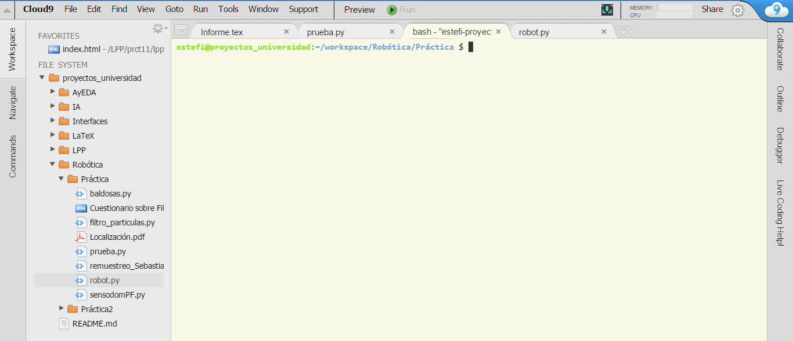
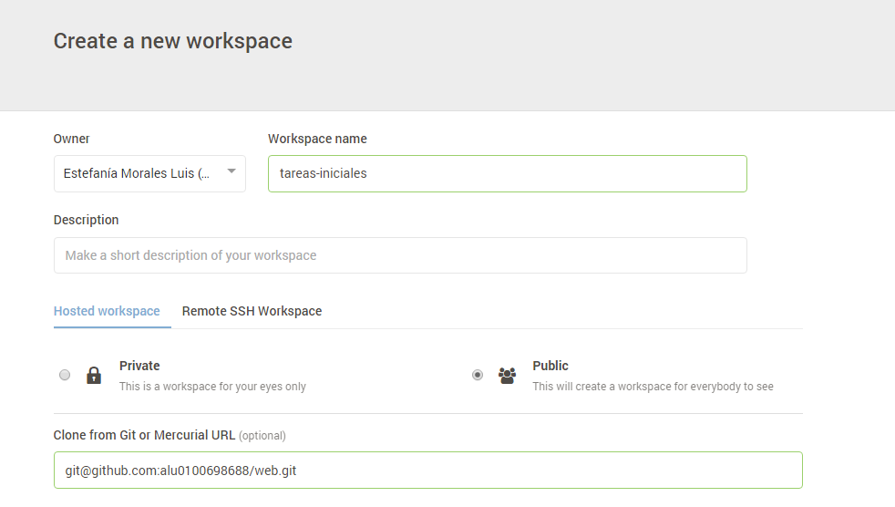

Cloud 9
Es un IDE de desarrollo online, para su uso será necesario crear una cuenta en la página oficial o acceder con las credenciales de GitHub si ya se dispone de una cuenta. Una vez registrados podremos crear proyectos de varias tecnologías como puede ser NodeJS, HTML5, C++, Ruby On Rails, etc.
Acceso
Se puede acceder al entorno pinchando el siguiente enlace: Cloud9Uso
Si disponemos de algún proyecto en un repositorio de GitHub podremos asociarlo a Cloud9 para trabajar en él tan solo creando un “`nuevo workspace`” y añadiendo la url *git* del correspondiente repositorio. Además Cloud9 permite el trabajo en equipo en el IDE añadiendo miembros a tu workspace.